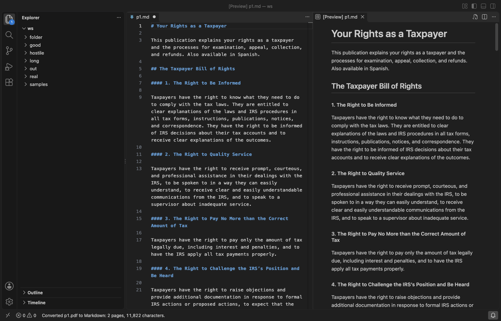

Open files in VS Code and Cursor / Office files
Split a PDF, Word file or deck into Markdown chunks for RAG
A RAG pipeline needs the text of a document cut into chunks of a known size. Convert to Markdown converts a PDF, Word file, deck or sheet to Markdown in VS Code, and its Pro tool Convert to LLM-ready Markdown Chunks cuts that Markdown at the headings into chunks of up to 800 estimated tokens. You get one JSONL file, or one Markdown file per chunk with YAML front matter that names the source file, the heading and the token estimate. It is part of Zovo Pro (USD 19 once), with 3 free tries on your computer, and the plain conversion stays free.
Free, MIT license. Extension ID zovo.zovo-convert-to-markdown, version 0.1.1. Needs VS Code 1.90.0 or newer.

Steps in VS Code
- Install Convert to Markdown from the Marketplace, or press Ctrl+P (Cmd+P on macOS) and run
ext install zovo.zovo-convert-to-markdown. - Right-click the file in the Explorer and pick Convert to Markdown first. The free result shows the headings that the chunks will be cut at.
- Right-click the file again and pick "Zovo Pro: Convert to LLM-ready Markdown Chunks". You can also run "Convert to Markdown: Convert to LLM-ready Markdown Chunks (Pro)" from the Command Palette.
- Pick One JSONL file, with one chunk per line, or One Markdown file per chunk.
- Pick where to save.
name.chunks.jsonlor a folder namedname-chunksnext to the source is filled in, and the folder is made if needed. - The JSONL file, or the first chunk file, opens beside the source. The status bar gives the number of chunks and the estimated tokens in all.
Where Zovo Pro saves time
Convert to Markdown and Copy as Markdown are free for PDF, DOCX, PPTX, XLSX, XLS, ODS, CSV, HTML, EPUB, ODT and RTF files, with no limit. The free Markdown keeps the headings, lists and tables, so you can also split it with a script of your own. No Python and no server are needed, and nothing leaves your computer.
Writing a splitter for each kind of file takes time. Convert to LLM-ready Markdown Chunks cuts the Markdown at headings of level 1 to 3. A section longer than the limit is split at blank lines outside code blocks. Each JSONL line has an id, the source file, the title, the chunk number, the heading and the headings above it, the token estimate, the date and the text. Each chunk file (001.md, 002.md and so on) has the same facts as YAML front matter, plus the format and the page, slide, sheet or chapter count of the source. The other Pro tools convert a whole folder to Markdown and save the pictures of a document to an assets folder.
With Convert to LLM-ready Markdown Chunks (Zovo Pro)
- Right-click the file and pick "Zovo Pro: Convert to LLM-ready Markdown Chunks".
- Pick JSONL or Markdown files, then the place to save. Escape at any step uses no try.
- A try counts only after the chunks are written. A file with no text writes nothing and uses no try.
Convert to LLM-ready Markdown Chunks works 3 times on your computer before it asks for a license, and a try counts only when you get a result. Opening a file shows no popup and no countdown.
Zovo Pro costs USD 19 once. It is not a subscription, and it turns on the Pro tools in every Zovo extension, not only Convert to Markdown. After a card payment (Stripe) your license key shows on the next page. In VS Code, run "Zovo Pro: Enter Zovo Pro license key" from the Command Palette and paste it. The key is checked on your computer, with no network call. With GitHub Sponsors, pick the "$19 one time" tier, then run "Zovo Pro: I already paid: unlock with GitHub Sponsors" and sign in with the same GitHub account. With PayPal, send USD 19 with "Zovo Pro" in the note and the key comes by email within a day.
A team of 5: USD 59 once, by card or by PayPal. Every rule and every Pro tool is on the Zovo Pro page.
Steps in Cursor, Windsurf or VSCodium
- Open the Extensions view with Ctrl+Shift+X (Cmd+Shift+X on macOS).
- Search for
zovo.zovo-convert-to-markdownand click Install. Cursor, Windsurf and VSCodium install from Open VSX, where it is published aszovo/zovo-convert-to-markdown. - If your editor has no gallery, download the .vsix from the Open VSX page and run "Extensions: Install from VSIX...".
- Then use it the same way as in VS Code.
What Convert to Markdown handles
- PDF, Word (
.docx,.docm,.doc), PowerPoint (.pptx,.pptm,.ppsx) and Excel (.xlsx,.xls,.ods) files. - CSV, HTML, EPUB, ODT and RTF files.
- Chunks cut at headings of level 1 to 3, each with the path of headings above it.
- Long sections, which are split at blank lines outside code blocks.
- A chunk size from 100 to 100,000 estimated tokens (setting
toMarkdown.llmChunkTokens, default 800).
What it does not do
- The token count is an estimate (characters divided by 4), not the count of a real tokenizer. Leave room if your model has a hard limit.
- One paragraph, table or code block longer than twice the limit is cut by characters, which can split a sentence or a table row.
- It works on one file per run and has no folder mode.
- PDF headings come from font sizes. A PDF with no larger fonts has no headings, so its chunks are cut by size only. Scanned PDFs have no text, and OCR is not included.
- It only writes files. It makes no embeddings and sends nothing to a model or a server.
Other options
- LangChain. A free Python library. Its
MarkdownHeaderTextSplittersplits Markdown at headings, so it can chunk the free output of this extension. Needs Python. - Unstructured. A free Python library that reads PDF, Word and PowerPoint files and has
chunk_by_titleto cut them at titles. Needs Python, and some file types need extra system packages. - Docling. A free Python tool from IBM that converts PDF, DOCX and PPTX files and has its own chunker. Needs Python and downloads its models on first use.
Install counts and Open VSX status were checked on 13 November 2026. Descriptions in quotes are the extensions' own.
Questions
Which tokenizer does the estimate use?
None. It divides the number of characters by 4, a common rule of thumb for English text. Real counts can differ, more so for code and for other languages.
Can I make the chunks smaller or larger?
Yes. Set toMarkdown.llmChunkTokens to a number from 100 to 100,000 before you run the tool. The default is 800.
Does it send my documents anywhere?
No. The file is converted and split on your computer, with no network calls.
Does it work in Cursor or Windsurf?
Yes. Cursor, Windsurf and VSCodium install extensions from Open VSX. Search for the extension in their Extensions view and install it there.
More about Convert to Markdown
Read the Convert to Markdown page for every feature and setting, or the source code on GitHub.
Related guides
- Convert a PDF, Word, PowerPoint or Excel file to Markdown in VS Code
- Convert a PDF or Word file to Markdown and keep the images
- Export the speaker notes of a PowerPoint deck as text
- Convert a whole folder of PDF and Word files to Markdown
Zovo Pro and support
Zovo Pro: USD 19 once, every Zovo viewer. It turns on the Pro tools in this extension and in the other Zovo extensions you use. The free features stay free.
After a card payment your license key shows on the next page. Paste it with the command "Zovo Pro: Enter a key".
You can also support the work with no Pro:
Need your format supported?
Open a format request with a sample file, and I reply there whether it can be done. For USD 299 once, through this GitHub Sponsors tier, I add your file format or a missing feature to this extension, with tests, within 7 days.